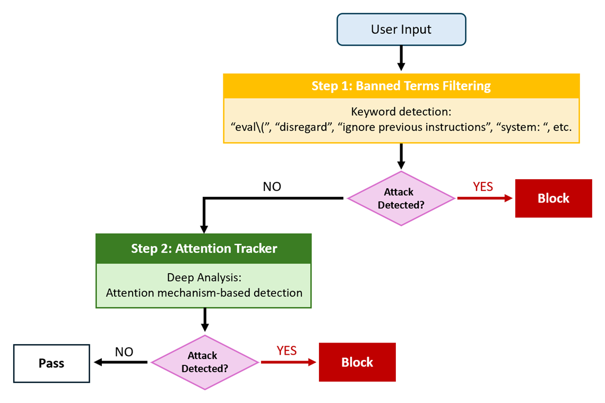
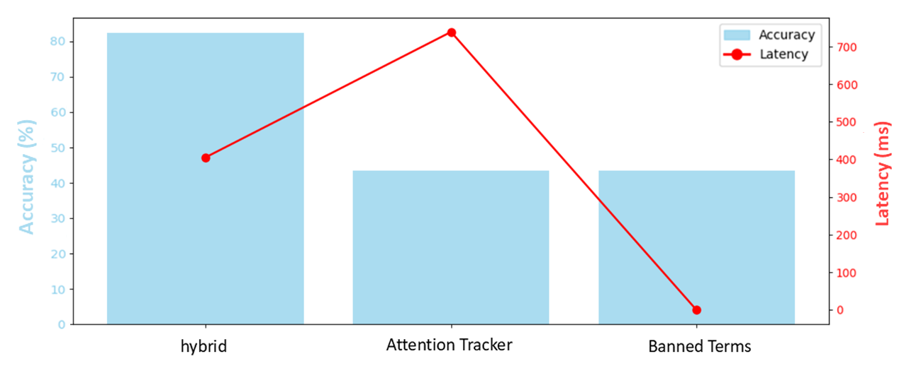
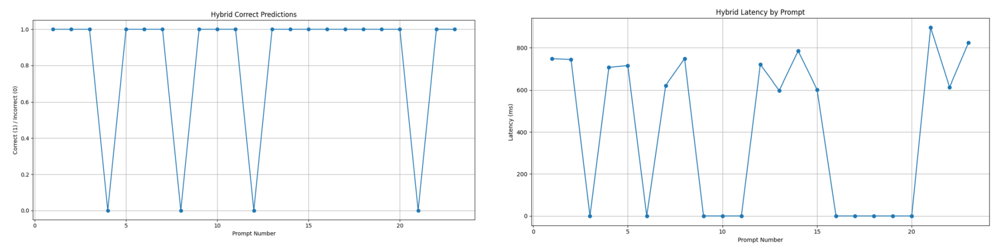

내용
공격 문장은 자연스러운 말로 위장할 수 있어 한 가지 방법으로는 막기 어렵습니다.
- 공격 정의
- 악의적 입력을 정상처럼 꾸며 AI 언어 모델(LLM)이 의도하지 않은 동작을 하게 만듭니다.
- 간접 공격
- 문맥 조작이나 감정 호소처럼 자연스러운 문장으로 위장하면 탐지가 어렵습니다.
Publication
금지어가 포함된 입력은 필터로 먼저 차단하고, 문맥 속에 숨은 공격은 모델의 주의 변화로 분석합니다. 탐지 정확도와 처리 속도를 함께 측정했습니다.
악성 프롬프트 23개 기준, 금지어 필터 단독과 Attention Tracker 단독은 각각 43%
Attention Tracker 단독 약 734ms 대비 제안 방법 약 406ms
공격 문장은 자연스러운 말로 위장할 수 있어 한 가지 방법으로는 막기 어렵습니다.
가벼운 금지어 필터로 먼저 거르고, 남은 입력만 무거운 어텐션 분석에 넘깁니다.

악성 프롬프트 23개로 정확도 약 83%와 지연 44.6% 단축을 확인했습니다.


규칙 필터와 어텐션 분석을 순서대로 묶으면 정확도와 지연이 함께 나아짐을 보였습니다.
이 연구는 2026년 정보처리학회 논문지 게재 논문으로 확장됐습니다.